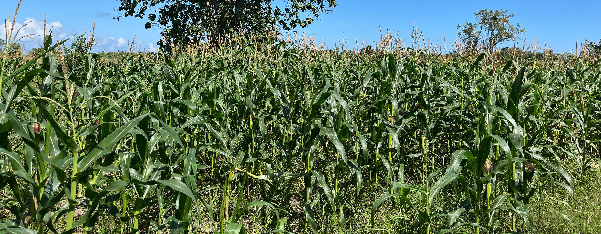
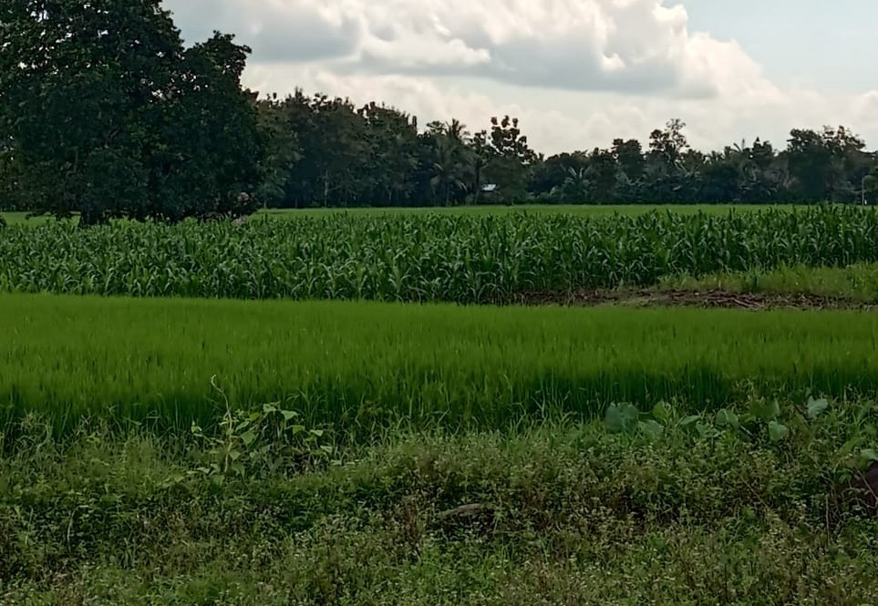
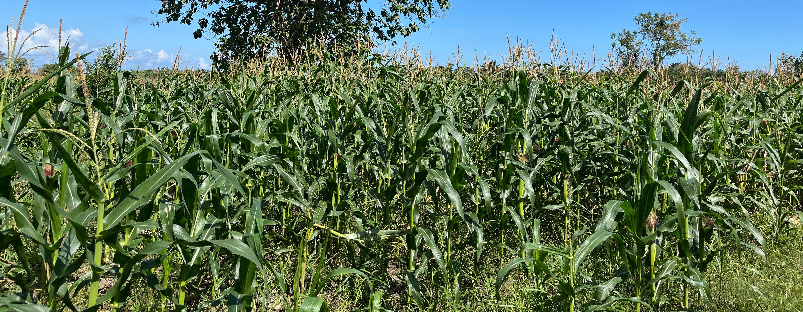
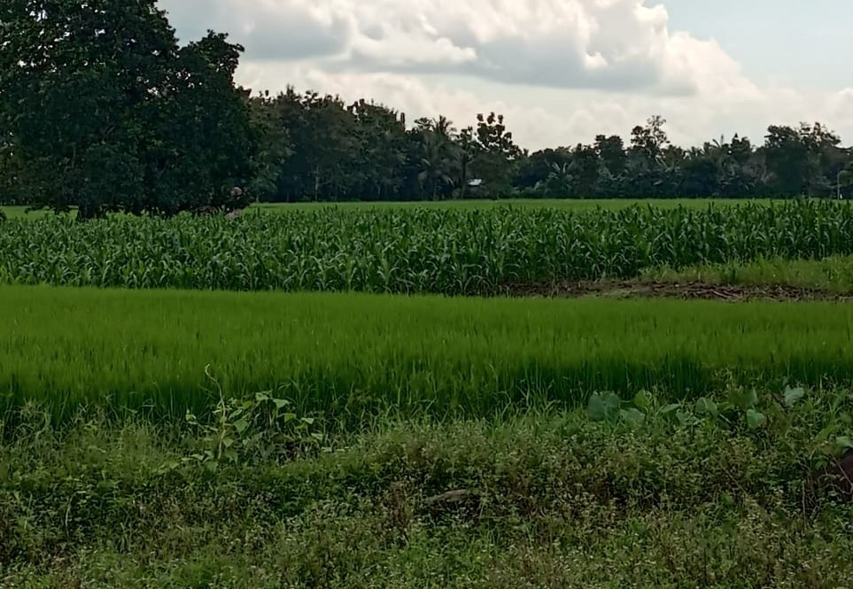

Desa Seppang
Kabupaten Bulukumba
Kabupaten Bulukumba
 



Jelajahi informasi lengkap mengenali Desa Seppang, sejarah, infografis, dan UMKM yang ada di Desa Seppang.
SelengkapnyaDesa Seppang merupakan salah satu desa di Kabupaten Bulukumba yang memiliki sejarah panjang dan cerita klasik dalam proses pembentukannya. Dahulu, wilayah ini dikenal dengan nama "Sappa", yang terletak di sebelah utara Sungai Kuboddong. Nama "Sappa" berasal dari ungkapan dalam bahasa Bugis: "Sappa'ki Passikajang na Bone, Sappa' tokki Bone na Kajang", yang secara makna berarti "Carilah Kajangnya Bone, juga carilah Bonenya Kajang". Ungkapan ini merujuk pada masa kejayaan Kerajaan Bone di bawah pemerintahan Arung Palakka, ketika salah satu kerabat dekat raja diasingkan ke wilayah yang saat itu dikenal sebagai Tanah Kajang. Beberapa tahun kemudian, raja memerintahkan untuk mencari kembali kerabat tersebut, dan kalimat itulah yang digunakan sebagai petunjuk. Dari peristiwa itulah, nama "Sappa" mulai dikenal dan melekat sebagai bagian dari identitas wilayah ini.
Saat ini, Desa Seppang memiliki luas wilayah sekitar 1.381,86 hektare dan secara administratif terbagi menjadi empat dusun, yaitu Dusun Batuloe, Dusun Kampung Tengnga, Dusun Tanah Cellae, dan Dusun Mattirowalie. Desa ini tidak hanya dikenal dengan sejarah dan budayanya yang kuat, tetapi juga terus berkembang dengan berbagai potensi yang dimiliki demi meningkatkan kesejahteraan masyarakat.
Desa Seppang, Kecamatan Ujung Loe, Bulukumba

Desa Seppang merupakan sebuah Desa yang menyimpan sejuta cerita klasik dan sejarah panjang dalam proses pembentukannya. Berawal dari sebuah wilayah pemukiman yang dikenal sebagai wilayah "Sappa" dan terletak di sebelah utara Sungai Kuboddong. Nama "Sappa" memiliki arti cari yang diambil dari kalimat "Sappa'ki Passikajang na Bone, Sappa' tokki Bone na Kajang" (Carilah Kajangnya Bone, juga carilah Bonenya Kajang). Penafsiran kalimat itu merupakan sebuah peristiwa dimulai dari zaman kejayaan Kerajaan Arung Palakka di Bone. Salah-satu kerabat dekat Raja Bone diasingkan ke daerah Kabupaten Bulukumba yang pada masa itu masih dikenal dengan tanah Kajang. Setelah beberapa tahun kemudian, turunnlah perintah raja untuk mencari kembali kerabat tersebut dengan menggunakan kalimat diatas “Sappa'ki Passikajang na Bone" yang dipahami maksudnya adalah: "Carilah orang Bone yang ada ditanah Kajang".
Peta Lokasi Desa Seppang
Lokasi Desa Seppang, Kecamatan Ujung Loe, Bulukumba
4
Dusun
4565
Jumlah Penduduk
1.381,86 Ha
Luas Desa
939
Kepala Keluarga
24
RT
9
RW
Deskripsi singkat mengenai sejarah, wilayah, dan struktur pemerintahan Desa Seppang.
Visualisasi data dan informasi penting seputar desa, seperti penduduk, fasilitas, dan potensi lokal.
UMKM (Usaha Mikro Kecil dan Menengah) yang berkembang di Desa Seppang dan mendukung perekonomian lokal.
Website profil Desa merupakan situs web yang memuat informasi dasar mengenai desa, sejarah, visi dan misi desa, sampai dengan peta wilayah desa.
Website ini dibuat oleh Rezqia, Mahasiswa KKN Universitas Hasanuddin Gelombang 114 Desa Seppang pada Juli 2025.
Situs web profil ini dibuat untuk tujuan promosi dan publisitas Desa Seppang agar lebih dikenal oleh khalayak ramai baik di dalam maupun di luar Desa Seppang.
Kec. Ujung Loe, Kab. Bulukumba, Sulawesi Selatan
© 2025 Desa Seppang - All rights reserved